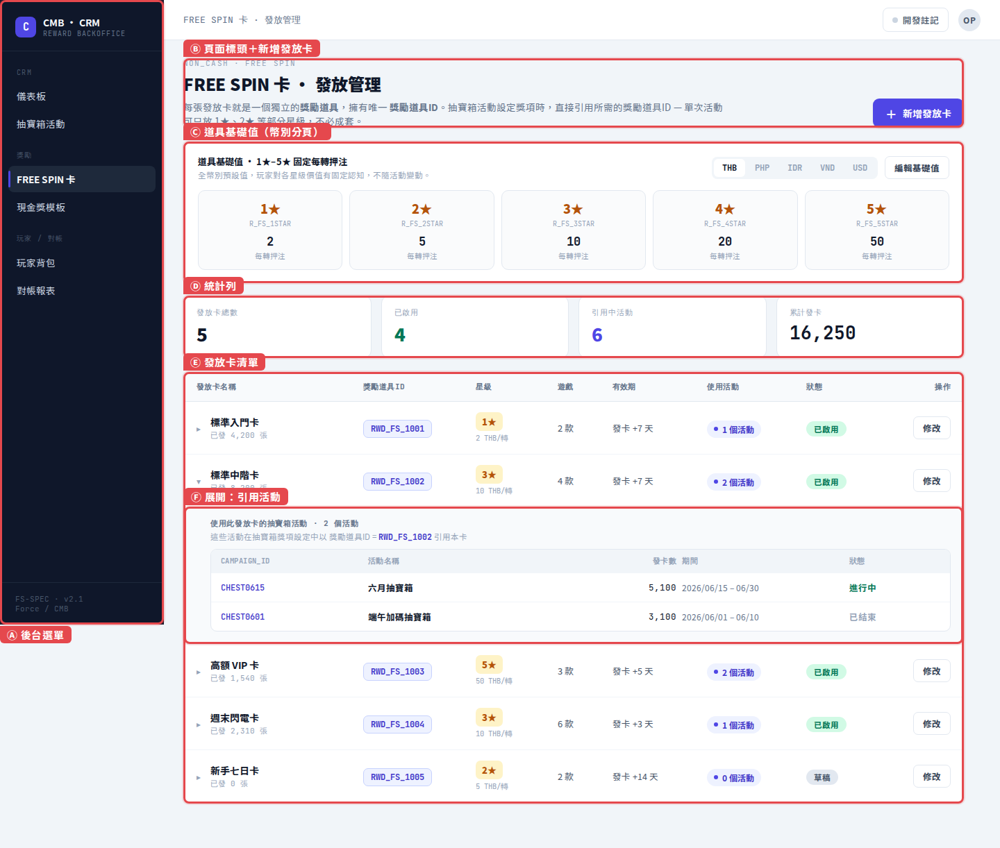
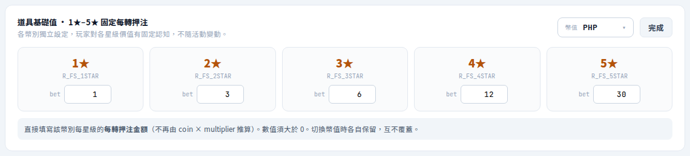
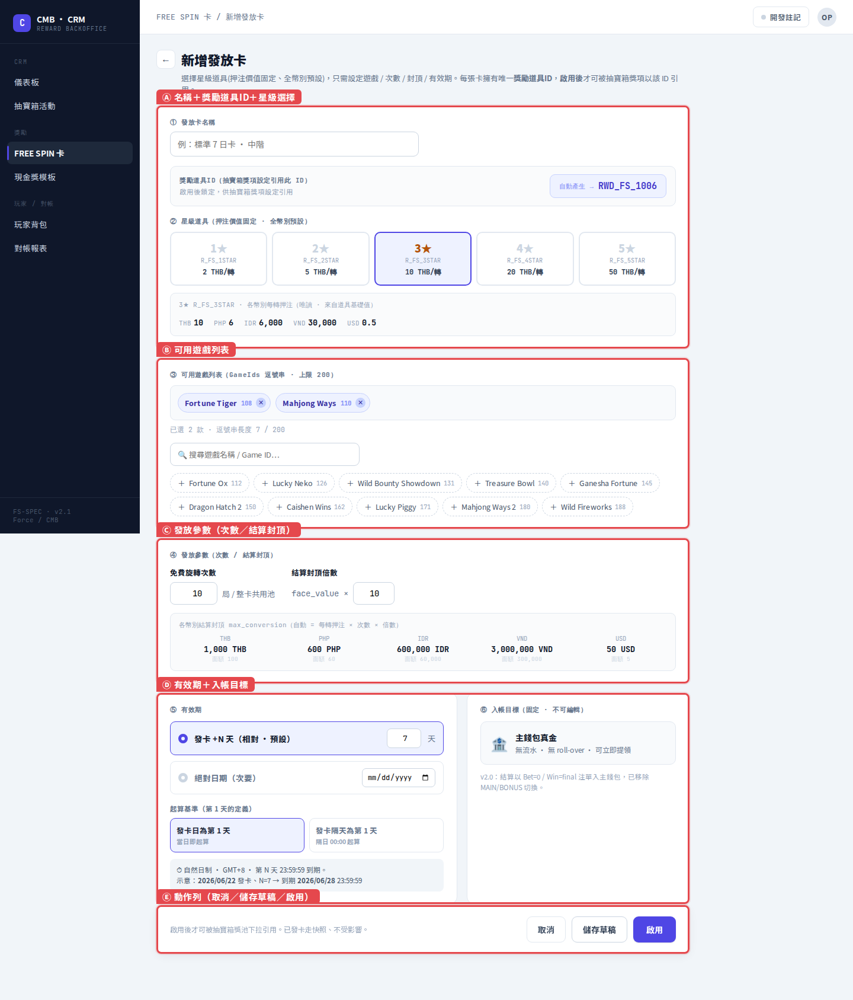
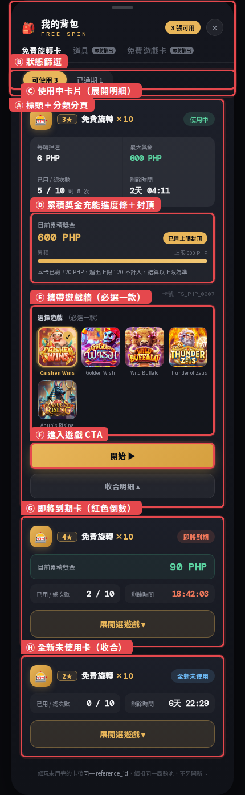

CMB · DEV SPEC · 2026
FREE SPIN 卡
FREE SPIN CARD · 開發交付版 · DEV V1.2（源自完整版 V2.4）
類型 CRM 周邊 · 非現金獎勵
來源 抽寶箱 第二階段
受眾 後端 / 前端 / 美術 / QA / 企劃
結構 頁面式三層 · 圖文對照
開發交付版
白話 · 可據以偵錯
CONFIDENTIAL · 2026
📌 修改紀錄 · REVISION LOG
| 修改日期 | 版號 | 修改章節 | 修改摘要 |
|---|---|---|---|
| 2026-08-13 | DEV V1.2 | 全文 | 版型：截圖大圖化＋右欄僅功能標題（錨點連結）＋「區域詳細說明」移到截圖下方；點圖以浮動彈窗置中放大（右上 ✕ 關閉，不另開視窗）；流程圖全面改直式；頂部列模式內文加寬；全文字級 +1。內容：①幣值改下拉選單（支援 64 幣值清單入規格）②道具基礎值只填 bet 單一欄位（廢除 coin×mult）③新增刪除功能（被進行中活動引用時 disabled）④引用活動張數：進行中即時撈取、已結束顯示留存固定值 ⑤統計列僅留「已啟用卡」⑥玩家卡名固定「{n}★ FREE SPIN」（發放卡名稱僅營運辨識）⑦移除草稿 ⑧新增 FREE SPIN 押注歷程分類（活動 › FREE SPIN 卡）與暫存分數 score 結算規則：結算＝min(score, max_conversion)、結算注單入一般注單與 Balance。截圖為原型改版前畫面，原型更新後重拍。 |
| 2026-08-11 | DEV V1.1 | 全文 | 升版為「頁面式三層骨架」（總覽 → 功能頁面 → 全域）：一個功能頁面一章，該頁的截圖／規則／防呆／驗收／錯誤集中同章；三個頁面章改用「原型截圖＋紅框區域標號」圖文對照；補齊 V1.0 缺漏的「開發前置條件、事件紀錄、待確認」三章與文件導覽互動。規格規則本身無變更。 |
| 2026-08-10 | DEV V1.0 | — | 首次發行（自完整版 V2.4 拆分） |
本文件內容有任何調整時，會在此表新增一筆，並於被修改的章節標題旁標示「YYYY-MM-DD」，請開發人員留意標記處的規格變動。
01
概要與目的
SCOPE & OVERVIEW
文件定位 · POSITIONING
本文件是 FREE SPIN 卡的開發交付版，受眾為後端、前端、美術、QA 等實作人員，以及非工程背景的企劃。全文只描述「要達到什麼目的、系統要有什麼行為、怎麼驗證做對了、出錯時怎麼處理」，並以白話撰寫——企劃要能看懂、能對外解釋、能據以偵錯。
本文件包含
卡片規則與生命週期、後台操作規格、玩家端背包與進入遊戲流程、美術主題與資產清單、驗收測試情境、錯誤處理、需留存的事件紀錄、開發前置條件
本文件不含
開發時程與任務分工、人力與獎勵成本、目標數字與推算、方案比較等管理內容——這些屬企劃／管理受眾，請看完整版
串接細節由開發決定
本文件不指定介接端點、參數表、傳輸格式、簽章方式、錯誤代碼；只界定必須達成的結果與約束。集成商細節唯一來源為《integration_consolidated_checklist_v2.html》
與完整版的關係：完整版（含目標數字與串接脈絡）另見 《Free Spin 抽寶箱發放卡規格書》（內容版號 V2.4） ↗。兩份文件如有衝突，以開發版（本文件）較新的修改紀錄為準。
章號已重新編號：本文件章號自 DEV §01 起重編，內文交叉引用已一併換算為本文件章號（統一寫作「DEV §NN」），可直接照讀。
核心定位
抽寶箱第一階段只派現金獎；第二階段起新增 FREE SPIN 卡這類「非現金獎勵」。一張 FREE SPIN 卡＝一張可在指定遊戲列表內免費旋轉 N 次的票券。本文件定義它從「後台建卡 → 抽中發卡 → 背包持有 → 進遊戲使用 → 整卡結算入帳」的完整行為，以及支撐它的後台獎勵清單工具與與集成商／平台的行為邊界。
後台可建卡
後台可登記「非現金獎勵」；第一階段只放「FREE SPIN 卡」，每個幣別各有 5 個押注階段，並填入該幣別對應的卡片價值。
發卡即鎖定
發卡瞬間就決定幣別、可用時間、可玩遊戲列表；卡內可自由切換列表遊戲，整卡結束前不做任何中途結算。
結算有上限、入真金
每張卡可指定最終獎金上限（max_conversion）；結算一律入主錢包真金，可立即提領，沒有流水限制。
需求對照（本文件涵蓋的 6 點）
| # | 需求 | 對應章節 | 關鍵機制（白話） |
|---|---|---|---|
| 1 | 後台可登記非現金獎勵，第一階段＝FREE SPIN 卡，每幣別 5 個押注階段＋填入價值 | DEV §03 · §05 · §06 | 卡型錄 ID（reward_id）分 1★–5★；後台建檔一次、活動下拉選用 |
| 2 | 發卡當下鎖定幣別 / 起訖時間 / 可用遊戲列表；列表內可自由換遊戲，整卡結束前不結算 | DEV §02 · §03 | 發卡當下把各項數值凍結成一份快照；同一張卡的次數是一個共用池，跨遊戲一起扣 |
| 3 | 可指定本次結算的最大上限值；結算入主錢包真金 | DEV §02 · §03 | 結算時取「累積贏分」與「上限」中較小的那個；以一筆「下注 0／派彩 final」的注單入主錢包 |
| 4 | 玩家背包可看可用卡片與細節（押注額 / 剩餘次數 / 上限 / 可玩遊戲 / 剩餘時間） | DEV §07 | 背包欄位直接對齊卡片快照，另加「目前累積獎金」與到期倒數 |
| 5 | 背包卡片可跳轉到指定遊戲 | DEV §07 | 進場前先綁定「這次要用的是哪一張卡」，再取得一次性遊戲入口 |
| 6 | 活動 / 卡序號源頭在我方；發卡時通知外部是哪個活動、幣值與獎金 | DEV §03 | 卡序號由我方產生且全域唯一；發卡時通知集成商建卡並取得成功確認 |
In Scope / Out of Scope
✔ In Scope（本版要做）
① 獎勵清單「非現金 / FREE SPIN 卡」資料結構與後台設定工具
② 抽寶箱抽中 → 發卡 → 背包 → 進入遊戲 → 結算 全鏈路行為
③ 發卡通知、進入遊戲、查詢對帳三類對外行為邊界（怎麼串由開發決定）
④ 結算上限封頂 + 以「下注 0／派彩 final」注單入主錢包真金（帶活動 ID 與卡序號供對帳）
⑤ 背包顯示與一次性進入遊戲入口
⑥ 卡片美術主題與資產清單（燙金票券方向已定案，見 DEV §04）
② 抽寶箱抽中 → 發卡 → 背包 → 進入遊戲 → 結算 全鏈路行為
③ 發卡通知、進入遊戲、查詢對帳三類對外行為邊界（怎麼串由開發決定）
④ 結算上限封頂 + 以「下注 0／派彩 final」注單入主錢包真金（帶活動 ID 與卡序號供對帳）
⑤ 背包顯示與一次性進入遊戲入口
⑥ 卡片美術主題與資產清單（燙金票券方向已定案，見 DEV §04）
✘ Out of Scope（本版不做）
① FREE SPIN 以外的其他非現金獎（如後續的補登入卡、Bonus 卡等）→ 後續階段
② 抽寶箱本身的格子 / 權重 / 解鎖機制（見抽寶箱開發版規格）
③ 受限紅利（紅利錢包 / 流水 / roll-over）本版不做——獎勵一律真金直入主錢包
④ 遊戲端 Free Spin 演出的美術製作（屬遊戲端 / slot 規格，本文件只定卡片本身的美術）
② 抽寶箱本身的格子 / 權重 / 解鎖機制（見抽寶箱開發版規格）
③ 受限紅利（紅利錢包 / 流水 / roll-over）本版不做——獎勵一律真金直入主錢包
④ 遊戲端 Free Spin 演出的美術製作（屬遊戲端 / slot 規格，本文件只定卡片本身的美術）
權責邊界（誰是結果的源頭）：活動由 我方（Combo）主辦，所以局數與獎項結果都由我方提供、遊戲端 Free Spin 演出也由我方渲染。集成商只接收我方的結果再轉達給平台，不是結果的源頭。資料流向：我方（局數 + 獎項結果 + 演出）→ 集成商（接收 / 轉達）→ 平台（入帳 / 通知）。
另一種可能：若我方與平台直連（不經集成商），則由平台與我方串接這段。本文件負責「發卡 / 結算 / 行為邊界」，演出美術細節另立 slot 遊戲規格。
另一種可能：若我方與平台直連（不經集成商），則由平台與我方串接這段。本文件負責「發卡 / 結算 / 行為邊界」，演出美術細節另立 slot 遊戲規格。
與抽寶箱規格的關係：抽寶箱已在「獎勵清單」層預留 R_FS_1STAR～5STAR 樁位，並把 FREE SPIN 發放標記為第二階段啟用。兩份皆採「獎勵一律入主錢包真金」。本文件為該樁位的深度展開（不重寫抽寶箱本體），命名與其對齊以避免兩份打架。
02
整體流程與頁面地圖2026-08-13
FLOW & PAGE MAP
總流程（8 步 · 直式）
01
抽中 FS 卡
抽寶箱判定中獎獎勵為非現金 FREE_SPIN
↓
02
產生卡序號
我方產生 reference_id，寫入快照
↓
03
通知集成商建卡
告知這張卡的幣別／效期／遊戲／次數，並取得成功確認
↓
04
入背包
狀態 ISSUED，玩家可見（卡名固定「{n}★ FREE SPIN」）
↓
05
背包點擊進入
綁定這張卡，取得一次性遊戲入口
↓
06
遊戲中使用
剩餘次數遞減；每局贏分累加到暫存分數 score（不入 Balance）；可切換列表內的其他遊戲；每局歷程留在「活動 › FREE SPIN 卡」分類
↓
07
結算觸發
最後一次 FREE SPIN 結束（次數用完）或到達 valid_to——先到者觸發
↓
08
整卡結算
給付 min(score, max_conversion)；以一筆注單入主錢包真金；剩餘未轉次數放棄
結算三步驟（暫存分數 score → 一律主錢包真金）
SETTLE 0 · 觸發
最後一次 FREE SPIN 結束 或 卡片到期（先到者）
整張卡只結算一次；兩個觸發點以先到者為準
↓
SETTLE 1
彙總暫存分數 score
整張卡每一局的贏分都只累加在 score，過程中 Balance 完全不動
↓
SETTLE 2
套用上限 max_conversion
final ＝ min(score, max_conversion)：score 超過上限給上限、未超過給 score；超出部分捨棄
↓
SETTLE 3 · 入主錢包真金
以「下注 0 / 派彩 final」注單發放
產生一筆零下注中獎注單（帶 campaign_id 與卡序號）——這筆注單放「一般注單」，Balance 於此刻增加，並以 bet=0 發放方式與平台／集成商同步資產增加。無流水、無 roll-over。
FREE SPIN 押注歷程單獨分類：卡片內每一局 FREE SPIN 的押注／贏分歷程不放一般注單，歸在「活動 › FREE SPIN 卡」分類留存（對帳與客訴查詢用）；只有最後那筆結算注單進一般注單。
為什麼是注單而不是另開一條金流：獎勵即真金，搭遊戲本來就在跑的注單流送出，不需要第二條金流管線，也不需要紅利錢包、流水倍數或 roll-over。封頂由我方結算層自己算好再送出。
頁面地圖（本文件的功能頁面章）
整條鏈路落在 3 個功能頁面上；每個頁面一章，該頁的畫面、規則、防呆、驗收與錯誤處理全部集中在該章，查一個功能不必跨章拼湊。
| 頁面 | 誰在用 | 這一頁做什麼 | 對應章節 |
|---|---|---|---|
| 後台 · 發放管理列表 | 營運 | 發放卡型錄總覽、道具基礎值維護、引用活動追蹤、停用把關 | DEV §05 |
| 後台 · 新增／編輯發放卡 | 營運 | 建卡：選星級、勾遊戲、填次數與封頂、設有效期，按「啟用」（含二次確認）即生效 | DEV §06 |
| 玩家端 · 背包 | 玩家 | 查看持卡明細與累積獎金、選攜帶遊戲、進入遊戲 | DEV §07 |
| （外部）抽寶箱活動獎項設定 | 營運 | 從獎池下拉引用「已啟用」的發放卡（reward_id） | 見抽寶箱開發版規格 |
頁面之間怎麼接：後台建卡（§06）→ 啟用後進入型錄（§05）→ 抽寶箱活動引用 → 玩家抽中發卡 → 背包持有與進入遊戲（§07）→ 到期整卡結算（規則見 §02 結算三步驟、§03 全域規則）。
03
名詞與全域規則2026-08-13
TERMS & GLOBAL RULES
為什麼保留欄位名？下表的 reference_id、campaign_id、max_conversion 等是查 log、對帳、偵錯時大家共用的語言。企劃回報問題時直接講欄位名，工程師就知道要查哪裡，所以刻意保留。
名詞釋義
| 名詞 | 我方欄位 | 說明 |
|---|---|---|
| FREE SPIN 卡 | free_spin_card | 一張可在指定遊戲列表內使用 N 次免費旋轉的票券 |
| 卡序號 | reference_id | 每張卡的唯一序號，由我方產生，是通知外部、日後查詢與防重複的鑰匙（長度上限 50 字元） |
| 活動 ID | campaign_id | 這張卡是「哪一檔抽寶箱活動」發出的，用於對帳與來源追溯 |
| 幣別 | currency | 發卡當下鎖定，全程不可變 |
| 押注階段 | bet_tier (1–5) | 每個幣值有 5 個押注階段（＝星級），對應不同的每轉押注金額 |
| 每轉押注 | bet | 該星級 × 幣值的每轉押注金額，營運於「道具基礎值」直接填寫的單一數值（DEV V1.2 起廢除 coin_size × multiplier 推算） |
| 暫存分數 | score | 卡片進行中的累積贏分暫存值，不直接進 Balance；結算時給付 min(score, max_conversion) 一次入帳 |
| 發放卡名稱／玩家卡名 | card_name（僅後台） | 發放卡名稱僅供營運辨識、玩家不會看到；玩家端一律顯示固定卡名「{n}★ FREE SPIN」（n＝星級），全語系統一 |
| 總次數 / 剩餘次數 | num_of_rounds / rounds_left | 整張卡的免費旋轉局數；跨列表內的遊戲共用同一池 |
| 可用遊戲列表 | game_ids[] | 發卡當下鎖定，卡內可自由切換；串起來的長度上限 200 字元 |
| 有效期限 | valid_from / valid_to | 發卡當下依卡模板的 N 天換算並凍結；發卡日為第 1 天，第 N 天 23:59:59（GMT+8）到期（自然日制）。到期統一結算（給付 min(score, 上限)），剩餘未轉次數視同放棄 |
| 結算上限 | max_conversion | 整卡結束後最終可獲得的獎金上限值，由我方結算層強制套用 |
| 入帳目標 | —（固定主錢包） | 一律入主錢包真金，以「下注 0／派彩 final」的注單發放，無流水、無 roll-over |
| 卡片價值 / 面額 | face_value | 該幣別此押注階段的「對應價值」，供展示、成本估算與對帳 |
三層 ID 關係（campaign_id ↔ reward_id ↔ reference_id）
最容易誤解的一點：「跟著活動」的是 campaign_id，不是 reference_id。reference_id 跟著「每一張發出去的卡」、且必須全域唯一。一檔活動發給 1,000 位玩家＝1,000 張卡＝1,000 個不同的 reference_id。同一個序號重送，集成商會拒絕、不會重複建卡。
| ID | 跟著誰 | 數量關係 | 用途 |
|---|---|---|---|
| campaign_id | 活動 | 一檔抽寶箱活動 = 1 個 | 來源追溯、對帳分組 |
| reward_id | 卡型錄（R_FS_3STAR） | 一款卡 = 1 個，可跨活動複用 | 標記「哪一款卡」 |
| reference_id | 每一張發出去的卡 | 每張唯一、全域不重複 | 通知外部、查詢、防重複發卡 |
命名慣例（所以它看起來像跟著活動）：習慣把活動代碼當前綴放進 reference_id，但整串必須每張唯一——
reference_id = FS_{campaign_id}_{player_id}_{seq} 例：FS_CHEST0615_user88231_0007
前綴可追溯來源（活動），後段（玩家 + 流水號）確保每張卡獨一無二。補發新卡時 campaign_id 可沿用，但 reference_id 必須產新的。
reference_id = FS_{campaign_id}_{player_id}_{seq} 例：FS_CHEST0615_user88231_0007
前綴可追溯來源（活動），後段（玩家 + 流水號）確保每張卡獨一無二。補發新卡時 campaign_id 可沿用，但 reference_id 必須產新的。
卡型錄 ID 結構（reward_id）
沿用抽寶箱命名，FREE SPIN 卡的 reward_id 以 R_FS_{星級} 表示 5 個押注階段；實際「幣別」由發卡時帶入的 currency 決定，所以同一個 reward_id 可跨幣別複用，幣別專屬數值（coin_size / face_value / max_conversion）存在各幣別的子表。
| reward_id | 押注階段 | 類型 | 說明 |
|---|---|---|---|
| R_FS_1STAR | Tier 1（最低押注） | FREE_SPIN | 入門級 Free Spin 卡 |
| R_FS_2STAR | Tier 2 | FREE_SPIN | — |
| R_FS_3STAR | Tier 3 | FREE_SPIN | — |
| R_FS_4STAR | Tier 4 | FREE_SPIN | — |
| R_FS_5STAR | Tier 5（最高押注） | FREE_SPIN | 高價值 Free Spin 卡 |
已發卡快照（player_free_spin_card · 發卡即寫死）
關鍵設計：發卡的瞬間，下列欄位全部「凍結」成一筆快照，之後即使後台改了獎勵清單也不影響已發出的卡（避免改價回溯）。這是後台防呆最重要的一條，見 DEV §06。
| 欄位 | 發卡時來源 | 之後可否改變 |
|---|---|---|
| reference_id | 我方產生（全域唯一） | 否 |
| player_id | 中獎玩家 | 否 |
| campaign_id | 來源抽寶箱活動 | 否 |
| reward_id | R_FS_1~5STAR | 否 |
| currency | 玩家幣別 | 否 |
| bet_tier / bet（每轉押注） | 道具基礎值對應幣值的設定值 | 否 |
| num_of_rounds | 獎勵清單 | 否 |
| rounds_left | 初始 = num_of_rounds | 是（每玩一局遞減） |
| score | 初始 0（暫存累積贏分） | 是（每局贏分累加；結算後定格） |
| game_ids[] | 獎勵清單的遊戲列表 | 否 |
| validity_days | 卡模板（發卡 +N 天 · 自然日） | 否 |
| valid_from / valid_to | 發卡時間 + 卡模板 N 天（自然日換算，GMT+8；valid_to = 第 N 天 23:59:59） | 否 |
| max_conversion | 獎勵清單對應幣別的設定值 | 否 |
| status | ISSUED → ACTIVE → SETTLED / EXPIRED | 是 |
發卡即鎖定 + 多遊戲切換（共用局數池）
一張卡 = 一個共用局數池：玩家用這張卡玩 A 遊戲後，只要還有剩餘次數，就可自由切換到列表內的 B 遊戲繼續玩，次數從同一池扣。整張卡結束前不做任何中途結算，贏分先累積在卡上，直到整卡結束才一次給最終獎金。
| 規則 | 說明 |
|---|---|
| 列表鎖定 | 可玩遊戲列表在發卡當下決定，遊戲中不可新增 / 移除 |
| 自由切換 | 只要剩餘次數大於 0 且卡未過期，玩家可在列表內任一遊戲間切換 |
| 共用局數 | A 遊戲花 3 局、B 遊戲花 2 局，總池一起遞減；不分遊戲各自計次 |
| 不中途結算 | 切換遊戲、離開遊戲、重新登入都不觸發結算；贏分累加在暫存分數 score，不動 Balance |
| 結算觸發 | 最後一次 FREE SPIN 結束（次數用完）或到達 valid_to——先到者觸發整卡結算一次 |
| 剩餘次數 | 結算時未轉的剩餘次數視同放棄，不補轉、不折現；已累積的贏分照常結算給付 |
結算時機：本卡的局數與結果都由我方自產，不是每轉即時派彩；每局贏分只進暫存分數 score。「次數用完」或「到期」先到者觸發統一結算一次，金額＝min(score, max_conversion)，剩餘未轉次數放棄。
⚠ 防濫用：真金直發的必要控管
風險必須有人接：舊設計靠「高價值卡鎖紅利錢包、用平台流水門檻擋提款」來防濫用。改成結算即真金、可立即提領後，這道防線消失。防濫用責任回到 CRM 中台自持，發卡 / 結算前須通過以下控管。
| 控管 | 說明 |
|---|---|
| 領取資格 | 限定目標分群 / 玩家類型；不合格玩家不得發卡（防小號刷獎） |
| 頻率 / 額度 | 單人 / 單活動 / 單日的發卡與派彩上限；搭配中台先鎖額度，避免非同步空窗期超發 |
| 黑名單 / 風控旗標 | 命中風控（多帳號、異常提款）即攔截發卡或結算 |
| 結算封頂 | 最終金額取「累積贏分」與 max_conversion 中較小者，由我方結算層強制套用，杜絕超發 |
對帳單純化：入帳只有一種目標（主錢包），對帳時用 campaign_id 與卡序號把每筆中獎歸到正確的活動 / 卡片即可，不需要再區分錢包別。
已發卡不可變更 · 擴充走「補發新卡」
已經發到玩家背包、且已通知集成商建好的卡，遊戲列表 / 次數等不可原地修改。原因：集成商建卡後即無法修改內容，且卡序號不可重複使用。
| 情境 | 可行性 | 做法 |
|---|---|---|
| 改「卡模板」往後多開遊戲 | ✔ 可行 | 改獎勵清單即可，但僅對「改完之後才發出的卡」生效；已發卡因快照設計維持原樣（避免規則回溯） |
| 幫「玩家手上使用中的卡」加遊戲 | ✘ 技術不可 | 該張卡在集成商端已建立且不可修改，無法追加範圍 |
| 真的要讓玩家能玩更多 → 補發新卡（建議） | ✔ 建議 | 用新的卡序號 + 擴充後的遊戲列表發一張新卡；玩家持兩張卡＝兩個獨立局數池 |
| 作廢舊卡重發 | ✘ 不採用 | 已定調：已發卡不作原地變更 / 作廢，擴充一律走「補發新卡」 |
與集成商／平台的行為邊界
本章只講「要達成什麼」
本章不指定怎麼串——端點、參數、傳輸格式、簽章方式由開發自行決定。這裡只界定必須達成的行為結果。
我方
主辦活動 · 產卡序號
活動、局數、獎項結果都在我方
↓
集成商
接收 / 轉達
純中繼，不是結果的源頭
↓
平台
入帳 / 通知
收注單，結算入主錢包真金
| # | 行為要求 | 必須達成什麼 |
|---|---|---|
| 1 | 結果的源頭在我方 | 活動、局數、獎項結果的源頭都是我方；集成商只負責接收與轉達，不產生也不改寫結果。 |
| 2 | 發卡須通知並取得確認 | 發卡時須通知集成商建卡，並取得成功確認後才視為發卡完成；失敗要可重試，重試不得造成重複發卡。 |
| 3 | 卡序號全域唯一 | 每張卡的序號全域唯一；同一序號重複通知不得造成重複發卡（視為已成功）。 |
| 4 | 結算以一筆注單入主錢包 | 整卡結算以一筆「下注 0 / 派彩 final」的注單發放入主錢包真金，並須帶活動 ID 與卡序號供對帳歸戶。 |
| 5 | 對帳以我方自記為主 | 對帳的真相來源是我方自己的發卡與結算紀錄；向集成商查詢的結果僅作輔助校驗，不作為帳務依據。 |
| 6 | 過期卡不可再進入遊戲 | 已過期的卡不可再取得遊戲入口、不可進入遊戲；背包端置灰唯讀。 |
| 7 | 每次下注當下判斷有效性 | 每次下注當下判斷這張卡是否已失效；若已失效，直接結算給錢、不再起新局。 |
串接細節唯一來源：與集成商往來的實際端點、欄位、格式與確認事項，一律見 《integration_consolidated_checklist_v2.html》（唯一來源）。本文件不重複維護，也不得與該清單並列為第二來源。
04
美術主題與風格（已定案）
ART DIRECTION
定案方向 · DECIDED
主體採「燙金票券／珍藏卡」，累積獎金進度條借用「充能光效」概念。本節內容已拍板，直接作為美術與前端的執行依據。
主題調性 · 燙金票券／珍藏卡
| 項目 | 定案內容 |
|---|---|
| 主體意象 | 卡片呈實體票券質感——燙金邊框、票券撕角、鋼印壓紋，傳達「從寶箱抽出的珍藏票」的價值感 |
| 色調 | 深色底 ＋ 金色主調，延續抽寶箱金色寶箱的視覺系統，與現有背包原型的深金風格一致 |
| 為什麼選它 | ① 與發卡來源（抽寶箱）視覺連貫——玩家一眼看得出這張卡是從寶箱來的；② 可複用抽寶箱既有材質庫，大幅降低新製作量 |
| 不做什麼 | 不另起一套與抽寶箱無關的視覺語言；不用純扁平無質感卡面（會失去「珍藏票」的價值感） |
星級分級（1★–5★）· 以材質區分，不只靠顏色
五個星級以材質做主要區分，卡框與底紋隨材質同步變化；星數圖示同時顯示，讓色弱玩家也能辨識等級（不可只用顏色傳達等級）。
★
1★ 銅
霧面銅質、細粒質感
入門卡
入門卡
★★
2★ 銀
拉絲銀面、冷色高光
—
—
★★★
3★ 金
燙金主視覺、暖色高光
主力卡
主力卡
★★★★
4★ 白金
冷白金屬、鏡面反光
—
—
★★★★★
5★ 彩鑽
折射彩光、稀有感最強
高價值卡
高價值卡
| 星級 | 材質 | 卡框與底紋 |
|---|---|---|
| 1★ | 銅 | 銅色邊框 + 霧面底紋；星數圖示顯示 1 顆 |
| 2★ | 銀 | 銀色拉絲邊框 + 冷色底紋；星數圖示顯示 2 顆 |
| 3★ | 金 | 燙金邊框 + 暖金底紋（系統主視覺基準）；星數圖示顯示 3 顆 |
| 4★ | 白金 | 冷白金屬邊框 + 鏡面底紋；星數圖示顯示 4 顆 |
| 5★ | 彩鑽 | 彩色折射邊框 + 稀有底紋；星數圖示顯示 5 顆 |
累積獎金進度條 · 充能光效
獎金累積時，進度條由左至右填充金色光暈（充能感）；達到 max_conversion 上限封頂時，整條金光滿格並顯示「已達上限封頂」。沿用《遊戲背包頁原型》既有的進度條設計，本規格正式定為風格基準。
累積中（約 45%）270 / 600 PHP
已達上限封頂（滿格）已達上限封頂
行為對齊：進度條的分母是該卡的 max_conversion，不是累積贏分。累積贏分超過上限時進度條停在滿格，並在下方以一行小字說明「超過上限的部分不計入，結算以上限為準」（文案見 DEV §07 語系表）。
狀態徽章（四態）
使用中（金）
全新（綠）
即將到期（紅 · 含倒數）
已過期（灰 · 整卡置灰唯讀）
| 狀態 | 顏色 | 樣式規則 |
|---|---|---|
| 使用中 | 金 | 已開打過的卡；卡框為該星級材質原色，徽章金底金字 |
| 全新 | 綠 | 尚未使用（已用 0 次）；徽章綠底綠字 |
| 即將到期 | 紅 | 剩餘時間少於 24 小時；徽章紅底紅字並顯示倒數計時，剩餘時間欄位同步轉紅（沿用原型的紅色警示樣式） |
| 已過期 | 灰 | 整張卡置灰唯讀、按鈕不可點；歸入背包「已過期」分頁 |
關鍵美術資產清單
| 資產 | 內容 | 備註 |
|---|---|---|
| 背包卡片 5 階材質框 | 銅 / 銀 / 金 / 白金 / 彩鑽，各含卡框 + 底紋一組 | 可複用抽寶箱金色系材質庫，降低新製作量 |
| 狀態徽章 4 態 | 使用中（金）/ 全新（綠）/ 即將到期（紅・含倒數）/ 已過期（灰） | 可複用抽寶箱既有徽章樣式，僅換色與文字 |
| 遊戲圖示牆 | 卡片可玩遊戲的縮圖 chip（含已選中 / 未選中兩態） | 沿用遊戲既有縮圖資源，僅需選中框樣式 |
| 累積獎金充能進度條 | 底槽 + 金色光暈填充 + 滿格封頂態（含光暈強度） | 沿用《遊戲背包頁原型》既有進度條，定為風格基準 |
| 到期倒數警示樣式 | 紅字倒數 + 紅框卡片 + 紅底徽章一組 | 沿用原型紅色警示樣式，不另製 |
視覺基準以下列兩個原型為準：
🎮 遊戲背包頁原型 ↗
🛠 後台獎勵系統原型 ↗
本節範圍註記：細部規格（切圖尺寸、檔案命名、動效參數）待美術產出後補入升版——本節先定調性與資產清單，不阻塞開發。前端可先以現有原型樣式實作，材質圖替換即可。
05
頁面 · 後台發放管理列表2026-08-13
PAGE · ISSUANCE LIST
本頁目的
營運在這一頁總覽所有發放卡型錄：維護各星級「道具基礎值」、追蹤每張卡被哪些抽寶箱活動引用、把關刪除。Free Spin 卡是「建檔一次、到處複用的型錄」，這一頁就是型錄本身。
全頁截圖＋區域標號
⚠️ 截圖狀態：後台原型正依 2026-08-13 修改清單改版（幣值下拉選單、bet 單一欄位、刪除鈕、統計簡化、移除草稿）。本頁截圖為改版前畫面，原型更新後由 Cowork 重拍、同名覆蓋即自動更新；規格規則以內文文字為準。

📷 截圖待補：後台發放管理列表全頁畫面
將 fs_admin_01_issuance_list.png 放入 design_assets 後自動顯示
將 fs_admin_01_issuance_list.png 放入 design_assets 後自動顯示
截圖來源：後台獎勵系統 (standalone).html 原型 · 紅框 Ⓐ–Ⓕ 對應右表 · 點圖放大
| 區域 | 功能（點標題看詳細說明） |
|---|---|
| Ⓐ | 後台選單 |
| Ⓑ | 頁面標頭＋新增發放卡 |
| Ⓒ | 道具基礎值（幣值下拉＋bet 單欄） |
| Ⓓ | 已啟用卡數 |
| Ⓔ | 發放卡清單（修改・刪除） |
| Ⓕ | 展開：引用活動（張數撈取規則） |
▸ 點功能標題跳到下方「區域詳細說明」；點左側截圖可浮動放大檢視。
區域詳細說明
Ⓐ後台選單CRM 後台模組導覽；本功能位於「FREE SPIN 卡」。
限制與規則
- 選單項目：儀表板／抽寶箱活動／FREE SPIN 卡／現金獎模板／玩家背包／對帳報表
防呆與錯誤
- —
Ⓑ頁面標頭＋新增發放卡本頁定位說明；「＋新增發放卡」進入建卡頁（DEV §06）。
限制與規則
- 每張發放卡＝一個獨立獎勵道具、唯一 reward_id（RWD_FS_xxxx）
- 抽寶箱活動獎項設定直接引用此 ID
防呆與錯誤
- —
Ⓒ道具基礎值維護各星級「每轉押注（bet）」的全幣值預設值。
支援幣值清單（64 項 · 下拉選單資料源）
PHPUSDTWDTWDpTWDvBDTBNDBRLCNYEURHKDINRJPYKRWLKRMMKkMMKMXNMYRMYRhMYRdPKRIDRkIDRRUBSGDTHBVNDkVNDKHRkKHRLAKkLAKAEDNPRGBPGBP (< 25y)GBP (≧ 25y)AMDAUDARSCADCHFCLPCOPGELGHSKESKZTNGNNOKNZDOMRPGKPENPLNSARSEKTNDTRYTZSVESZARUGX

📷 截圖待補：道具基礎值編輯狀態
將 fs_admin_03_base_values_edit.png 放入 design_assets 後自動顯示
將 fs_admin_03_base_values_edit.png 放入 design_assets 後自動顯示
「編輯基礎值」展開示意（截圖為改版前 coin/mult 版，原型更新後重拍為 bet 單欄）· 點圖放大
展開後每星級一個 bet 輸入欄；face_value 與 max_conversion 由建卡頁自動推算（見 DEV §06）。
限制與規則
- 幣值以下拉選單選擇（含搜尋），支援幣值見下方清單（64 項，依 Combo 平台貨幣設定）
- 「編輯基礎值」展開後，每個星級只有一個 bet 欄位——直接填每轉押注金額；廢除 coin_size × multiplier 兩欄推算
- 1★–5★＝R_FS_1STAR～5STAR；全幣值預設值、不隨活動變動
- 各幣值已填數值各自保留；下拉切換幣值不清空、不互相覆蓋
防呆與錯誤
- 改基礎值只影響之後發出的卡；已發卡走快照不受影響（DEV §03）
- bet 為 0、負數或空值時擋下儲存
Ⓓ已啟用卡數顯示目前「已啟用」的發放卡數量。
限制與規則
- DEV V1.2 起只留「已啟用卡」一個數字；發放卡總數／引用中活動／累計發卡三項移除
- 欄位縮小為小型徽章／單欄，不再佔一整列大區塊
防呆與錯誤
- —
Ⓔ發放卡清單型錄總表，每列一張發放卡。
限制與規則
- 欄位：發放卡名稱＋已發張數／reward_id／星級＋每轉押注／遊戲數／有效期／使用活動數／狀態／操作（修改・刪除）
- 狀態只有「已啟用」一種（草稿已移除，建卡完成即啟用）
- 發放卡名稱僅供營運辨識；玩家端顯示固定卡名「{n}★ FREE SPIN」，兩者無關
防呆與錯誤
- 被進行中活動引用的卡：刪除鈕 disabled 不可點（hover 提示原因）
- 無引用的卡：可刪除，刪除前二次確認（摘要卡名＋reward_id）
Ⓕ展開：引用活動點列展開，查這張卡被哪些抽寶箱活動引用。
限制與規則
- 欄位：campaign_id／活動名稱／發卡數＋期間／狀態（進行中·已結束）
- 進行中活動：發卡張數即時撈取（隨發卡增加）
- 已結束活動：不再撈取，顯示資料庫留存的固定張數（數量不會再變動，省查詢成本）
- 一張卡可被多個活動引用＝型錄複用
防呆與錯誤
- —
幣值 × 5 階段設定矩陣（每個幣值一組）
營運自下拉選定一個幣值後，展開 5 列（Tier 1–5）逐列填寫。下表為 THB 範例（數值僅示意，實際由營運填）：
| Tier | reward_id | 每轉押注 bet（直接填） | 次數 | face_value（自動） | max_conversion（自動） |
|---|---|---|---|---|---|
| 1 | R_FS_1STAR | 2 | 10 | 20 THB | 200 THB |
| 2 | R_FS_2STAR | 5 | 10 | 50 THB | 500 THB |
| 3 | R_FS_3STAR | 10 | 10 | 100 THB | 1,000 THB |
| 4 | R_FS_4STAR | 20 | 10 | 200 THB | 2,000 THB |
| 5 | R_FS_5STAR | 50 | 10 | 500 THB | 5,000 THB |
「每轉押注」由我方帶入：幣值與每轉押注於發卡時由我方帶入，不是由外部預設。實際可帶入的欄位格式以集成商回覆為準（見 DEV §10 待確認第 ① 項）。
公版押注段 × 幣別 · face_value 對照表
本表為可填模板，提供「一套規則 + 跨幣別示意值」讓營運直接套用。幣值範圍以上方「支援幣值清單（64 項）」為準；下列各幣別的每轉押注為符合幣值習慣的示意值，實際數字由營運於後台填寫。
計算規則（讓數值可推導、可對帳）
① 每轉押注（bet）＝營運於「道具基礎值」各星級直接填寫的單一數值（DEV V1.2 起廢除 coin × mult 推算）
② face_value（票面價值） = 每轉押注 × 次數 → 代表這張卡「送出去的成本基準」，用於成本估算與對帳
③ max_conversion（結算上限） = face_value × 封頂倍數（示意用 ×10，營運可逐段調整）
④ 次數預設全段 = 10（可逐段調）；所有階段一律入主錢包真金
① 每轉押注（bet）＝營運於「道具基礎值」各星級直接填寫的單一數值（DEV V1.2 起廢除 coin × mult 推算）
② face_value（票面價值） = 每轉押注 × 次數 → 代表這張卡「送出去的成本基準」，用於成本估算與對帳
③ max_conversion（結算上限） = face_value × 封頂倍數（示意用 ×10，營運可逐段調整）
④ 次數預設全段 = 10（可逐段調）；所有階段一律入主錢包真金
| Tier | reward_id | 每轉押注 | 次數 | face_value | max_conversion (×10) |
|---|---|---|---|---|---|
| 1 | R_FS_1STAR | 2 | 10 | 20 THB | 200 THB |
| 2 | R_FS_2STAR | 5 | 10 | 50 THB | 500 THB |
| 3 | R_FS_3STAR | 10 | 10 | 100 THB | 1,000 THB |
| 4 | R_FS_4STAR | 20 | 10 | 200 THB | 2,000 THB |
| 5 | R_FS_5STAR | 50 | 10 | 500 THB | 5,000 THB |
| Tier | reward_id | 每轉押注 | 次數 | face_value | max_conversion (×10) |
|---|---|---|---|---|---|
| 1 | R_FS_1STAR | 1 | 10 | 10 PHP | 100 PHP |
| 2 | R_FS_2STAR | 3 | 10 | 30 PHP | 300 PHP |
| 3 | R_FS_3STAR | 6 | 10 | 60 PHP | 600 PHP |
| 4 | R_FS_4STAR | 12 | 10 | 120 PHP | 1,200 PHP |
| 5 | R_FS_5STAR | 30 | 10 | 300 PHP | 3,000 PHP |
| Tier | reward_id | 每轉押注 | 次數 | face_value | max_conversion (×10) |
|---|---|---|---|---|---|
| 1 | R_FS_1STAR | 1,000 | 10 | 10,000 IDR | 100,000 IDR |
| 2 | R_FS_2STAR | 3,000 | 10 | 30,000 IDR | 300,000 IDR |
| 3 | R_FS_3STAR | 6,000 | 10 | 60,000 IDR | 600,000 IDR |
| 4 | R_FS_4STAR | 15,000 | 10 | 150,000 IDR | 1,500,000 IDR |
| 5 | R_FS_5STAR | 30,000 | 10 | 300,000 IDR | 3,000,000 IDR |
| Tier | reward_id | 每轉押注 | 次數 | face_value | max_conversion (×10) |
|---|---|---|---|---|---|
| 1 | R_FS_1STAR | 5,000 | 10 | 50,000 VND | 500,000 VND |
| 2 | R_FS_2STAR | 15,000 | 10 | 150,000 VND | 1,500,000 VND |
| 3 | R_FS_3STAR | 30,000 | 10 | 300,000 VND | 3,000,000 VND |
| 4 | R_FS_4STAR | 75,000 | 10 | 750,000 VND | 7,500,000 VND |
| 5 | R_FS_5STAR | 150,000 | 10 | 1,500,000 VND | 15,000,000 VND |
| Tier | reward_id | 每轉押注 | 次數 | face_value | max_conversion (×10) |
|---|---|---|---|---|---|
| 1 | R_FS_1STAR | 0.1 | 10 | 1 USD | 10 USD |
| 2 | R_FS_2STAR | 0.2 | 10 | 2 USD | 20 USD |
| 3 | R_FS_3STAR | 0.5 | 10 | 5 USD | 50 USD |
| 4 | R_FS_4STAR | 1 | 10 | 10 USD | 100 USD |
| 5 | R_FS_5STAR | 2 | 10 | 20 USD | 200 USD |
填表注意：① 各幣別「每轉押注」須對齊該幣別遊戲端實際可用的最小押注段（避免送出遊戲端不接受的組合）；② IDR / VND 等大面額幣別，票面價值與上限位數很長，背包顯示需做千分位與縮寫（如 1.5M）；③ 同一個 reward_id（R_FS_nSTAR）跨幣別共用，但上表每列數值各幣別獨立存放。
獎勵類別擴充
| 類別 | 狀態 | 內容 |
|---|---|---|
| 現金獎 CASH | 已存在 | R_CASH_*（抽寶箱第一階段） |
| 非現金獎 NON_CASH | 本案新增 | 第一階段子項僅「FREE SPIN 卡」（R_FS_1~5STAR） |
本頁防呆總表
| 防呆點 | 規則 | 沒擋會發生什麼 |
|---|---|---|
| 刪除引用中的卡 | 被進行中活動引用的卡，刪除鈕 disabled 不可點；hover 顯示「此卡仍被進行中活動引用，無法刪除」。 | 活動抽到一張已刪除的卡，發卡流程當場失敗，玩家中獎卻沒拿到東西 |
| 刪除前二次確認 | 無引用的卡按刪除時跳確認視窗（摘要卡名＋reward_id），確認後才刪。 | 手滑誤刪剛設定好的卡，整組設定白做 |
| 基礎值／型錄修改不回溯 | 列表上的任何修改（基礎值、型錄內容）僅對「之後發出的卡」生效。 | 改價回溯到玩家手上的卡——完整規則見 DEV §06「已發卡快照凍結」 |
友善度設計
| 友善度設計 | 系統要做到什麼 |
|---|---|
| 型錄建檔一次、活動下拉選用 | 設定活動獎項時只需從現成清單下拉挑卡，不必每次新建一組卡再把 ID 抄回來。只有現有卡都不符規格時才回型錄新增一張。 |
| 幣值下拉選單 | 幣值從下拉直接選（含搜尋），64 項支援幣值一目了然；各幣值已填數值切換後原封不動保留。 |
| 大面額幣值自動格式化 | IDR／VND 等大面額幣值，輸入與顯示都自動加千分位，過長時另以縮寫輔助顯示（如 1.5M），避免營運數錯位數。 |
| 狀態一眼可辨 | 列表直接顯示「被幾個活動引用」與刪除鈕可否點擊，營運不必逐張點開才知道哪張卡在用。 |
本頁操作流程 · 型錄複用（直式）
一次性
① 建檔型錄
獎勵清單建好 R_FS_1~5STAR（各幣值 bet／遊戲列表／上限）
↓
每次活動
② 下拉選用
抽寶箱獎項欄位選現成 reward_id（如第 8 抽 ← R_FS_3STAR）
↓
僅缺規格時
③ 才新增卡
現有卡都不符（特殊次數／遊戲／上限）才回型錄多建一張，之後一樣複用
遊戲列表會不會常變？（已定調） 這是唯一可能逼你常常新建卡的欄位：
· 列表大致固定 → 遊戲列表也鎖在卡模板上，純複用最單純（本版採此）
· 列表常隨活動主題換 → 未來把遊戲列表升級為「活動可覆寫」，其他結算規則（上限 / 次數）仍永遠鎖在卡上
本版定調：遊戲列表鎖卡模板；結算規則一律鎖卡；入帳一律主錢包真金，無錢包別設定。
· 列表大致固定 → 遊戲列表也鎖在卡模板上，純複用最單純（本版採此）
· 列表常隨活動主題換 → 未來把遊戲列表升級為「活動可覆寫」，其他結算規則（上限 / 次數）仍永遠鎖在卡上
本版定調：遊戲列表鎖卡模板；結算規則一律鎖卡；入帳一律主錢包真金，無錢包別設定。
本頁驗收情境
| 情境名稱 | 前提（測試前先準備好什麼） | 動作（做什麼） | 預期結果（應該看到什麼） |
|---|---|---|---|
| 刪除引用中的卡 | 某張卡被 1 檔進行中活動引用 | 在列表找它的刪除鈕 | ① 刪除鈕 disabled 不可點；② hover 顯示原因；③ 該活動結束後刪除鈕恢復可點 |
| 刪除無引用的卡 | 某張卡未被任何活動引用 | 點刪除 → 確認視窗按確認 | ① 確認視窗顯示卡名＋reward_id；② 確認後卡片自列表消失；③ 抽寶箱獎項下拉不再出現此卡 |
| 引用活動張數撈取 | 某張卡被 2 檔活動引用（1 進行中、1 已結束） | 點列展開；隔一段時間（期間持續發卡）再展開一次 | ① 進行中活動的張數隨發卡即時增加；② 已結束活動的張數兩次相同（固定值、不再撈取） |
| 基礎值幣值保值 | 「編輯基礎值」已展開，先在 THB 填了 bet | 下拉切到 PHP 再切回 THB | THB 剛才填的數值原封不動還在，不因切換清空或互相覆蓋 |
本頁錯誤處理
| 狀況 | 系統怎麼反應 | 營運看到什麼 |
|---|---|---|
| 刪除仍被引用的卡 | 刪除鈕 disabled，不觸發任何動作。 | hover 提示「此卡仍被進行中活動引用，無法刪除」並可查看是哪幾檔活動。 |
| 修改已啟用且已發出的卡 | 允許儲存，但僅對「之後發出的卡」生效（快照凍結）。 | 儲存時提示「已發出的卡不受本次修改影響」。 |
後台文案 · 多國語系（中英對照 · 兩個後台頁共用）2026-08-13
後台文案 · 多國語系（中英對照）
FREE SPIN 卡發放後台所有介面文字 ×2 語系（en / zh-Hant）對照（依 FREE SPIN 卡設定後台原型）。後台為營運內部工具，僅需中英。
| 區塊 | zh-Hant | en |
|---|---|---|
| 選單 | 儀表板 | Dashboard |
| 選單 | 抽寶箱活動 | Treasure Box Campaigns |
| 選單 | FREE SPIN 卡 | FREE SPIN Cards |
| 選單 | 現金獎模板 | Cash Prize Templates |
| 選單 | 玩家背包 | Player Backpack |
| 選單 | 對帳報表 | Reconciliation Reports |
| 標題 | FREE SPIN 卡 · 發放管理 | FREE SPIN Card · Issuance Management |
| 按鈕 | ＋ 新增發放卡 | ＋ New Issuance Card |
| 區段 | 道具基礎值 | Item Base Value |
| 區段 | 固定每轉押注 | Fixed Bet per Spin |
| 連結 | 編輯基礎值 | Edit Base Value |
| 統計 | 已啟用 | Active |
| 表頭 | 發放卡名稱 | Card Name |
| 表頭 | 獎勵道具ID | Reward Item ID |
| 表頭 | 星級 | Star Tier |
| 表頭 | 次數 | Rounds |
| 表頭 | 有效期 | Validity |
| 表頭 | 使用活動 | Used in Campaigns |
| 表頭 | 狀態 | Status |
| 表頭 | 操作 | Action |
| 列文字 | 已發 {n} 張 | {n} issued |
| 列文字 | 發卡 +{n} 天 | +{n} days from issuance |
| 列文字 | {n} 個活動 | {n} campaign(s) |
| 狀態 | 已啟用 | Active |
| 操作 | 修改 | Edit |
| 操作 | 刪除 | Delete |
| 確認視窗 | 確認刪除這張發放卡？ | Delete this issuance card? |
| 展開標題 | 使用此發放卡的抽寶箱活動 | Treasure-box campaigns using this card |
| 展開表頭 | 活動名稱 | Campaign Name |
| 展開表頭 | 發卡數 · 期間 | Cards Issued · Period |
| 展開狀態 | 進行中 | Ongoing |
| 展開狀態 | 已結算 | Settled |
| 防呆提示 | 此欄為必填 | This field is required |
| 防呆提示 | 遊戲清單長度已超過上限 | Game list exceeds the length limit |
| 防呆提示 | 結算上限低於票面價值，請確認 | Max conversion is lower than face value — please confirm |
| 防呆提示 | 此卡仍被進行中活動引用，無法刪除 | This card is still used by an ongoing campaign and cannot be deleted |
| 確認視窗 | 確認啟用這張發放卡？ | Activate this issuance card? |
i18n 備註：① CAMPAIGN_ID / NON_CASH / FREE SPIN / RWD_FS_xxxx 等代碼為系統識別碼，不翻譯。② 數字、幣別、日期為動態值不進文案表。③ 繁中為文案基準（source）。
06
頁面 · 後台新增／編輯發放卡2026-08-13
PAGE · CARD FORM
本頁目的
營運在這一頁建一張發放卡：選星級道具（押注價值固定、全幣值預設），只需設定遊戲／次數／封頂／有效期。草稿已移除——填完按「啟用」（含二次確認）即生效；發出去的卡走快照，之後怎麼改都不受影響。
全頁截圖＋區域標號
⚠️ 截圖狀態：後台原型正依 2026-08-13 修改清單改版（幣值下拉選單、bet 單一欄位、刪除鈕、統計簡化、移除草稿）。本頁截圖為改版前畫面，原型更新後由 Cowork 重拍、同名覆蓋即自動更新；規格規則以內文文字為準。

📷 截圖待補：後台新增發放卡表單全頁畫面
將 fs_admin_02_card_form.png 放入 design_assets 後自動顯示
將 fs_admin_02_card_form.png 放入 design_assets 後自動顯示
截圖來源：後台獎勵系統 (standalone).html 原型 · 紅框 Ⓐ–Ⓔ 對應右表 · 點圖放大
| 區域 | 功能（點標題看詳細說明） |
|---|---|
| Ⓐ | 名稱＋獎勵道具ID＋星級選擇 |
| Ⓑ | 可用遊戲列表 |
| Ⓒ | 發放參數（次數／結算封頂） |
| Ⓓ | 有效期＋入帳目標 |
| Ⓔ | 動作列（取消／啟用） |
▸ 點功能標題跳到下方「區域詳細說明」；點左側截圖可浮動放大檢視。
區域詳細說明
Ⓐ名稱＋獎勵道具ID＋星級選擇填發放卡名稱、系統自動產生 reward_id、點選星級。
限制與規則
- 發放卡名稱僅供營運內部辨識，玩家不會看到——玩家端顯示固定卡名「{n}★ FREE SPIN」（DEV §07）
- reward_id（RWD_FS_xxxx）系統自動產生、啟用後鎖定
- 星級押注價值＝道具基礎值的 bet，選中後唯讀帶出各幣值每轉押注
防呆與錯誤
- 名稱必填
- reward_id 不可手改
Ⓑ可用遊戲列表搜尋＋點選加入這張卡可玩的遊戲。
限制與規則
- 已選遊戲顯示為可移除 chip
- game_ids 逗號串長度上限 200 字元，即時顯示「已選 n 款 · 長度 x / 200」
- 發卡後鎖定不可改（快照）
防呆與錯誤
- 超過 200 字元擋下送出並提示還差多少
Ⓒ發放參數（次數／結算封頂）填免費旋轉次數與結算封頂倍數。
限制與規則
- 次數＝整卡共用池（跨遊戲一起扣）
- face_value＝bet × 次數，自動計算唯讀
- 各幣值 max_conversion＝bet × 次數 × 倍數，自動計算唯讀
防呆與錯誤
- 次數／倍數為 0 或負數擋下
- 結算上限低於票面價值跳警示
Ⓓ有效期＋入帳目標設定卡片有效期；入帳目標唯讀顯示。
限制與規則
- 預設「發卡 +N 天（相對）」；起算基準預設「發卡日為第 1 天」
- 自然日制 GMT+8、第 N 天 23:59:59 到期；絕對日期為次要選項
- 入帳目標固定「主錢包真金 · 無流水」
防呆與錯誤
- N 必填
- 入帳目標不可編輯
Ⓔ動作列完成建卡：取消或啟用。
限制與規則
- 只有「取消」與「啟用」兩鈕——儲存草稿已移除，填完即啟用
- 啟用後即可被抽寶箱獎池下拉引用
防呆與錯誤
- 啟用前二次確認（摘要星級／次數／有效期／上限／遊戲數）
- 必填缺漏時不可啟用
本頁防呆總表
| 防呆點 | 規則 | 沒擋會發生什麼 |
|---|---|---|
| 已發卡快照凍結 最重要 | 已發出的卡採快照凍結；後台之後修改型錄（次數、上限、遊戲列表、押注），只對「改完之後才發出的卡」生效，已發卡完全不受影響。 | 改價會回溯到玩家手上的卡——玩家昨天抽到上限 1,000 的卡，今天變成 200，直接構成客訴與信任危機，且對帳金額對不起來 |
| 必填未填不可啟用 | 星級、次數、有效期、可玩遊戲、各幣值押注與上限任一未填，擋下啟用並明確指出哪一欄沒填。 | 發出一張缺參數的卡，玩家點進去無法開局，或結算時算不出金額 |
| 可用遊戲列表超過上限 | 遊戲清單串起來超過 200 字元時擋下送出並提示還差多少，同時即時顯示目前長度（如 42 / 200）。 | 發卡通知會被外部拒收，這張卡建不起來，玩家背包出現一張永遠無法使用的卡 |
| 數值不合理警示 | 例如結算上限低於票面價值、次數為 0、押注為 0 或負數，跳警示要求確認或直接擋下。 | 卡送出去玩家怎麼玩都拿不到合理獎金，或成本估算完全失真 |
| 啟用前二次確認 | 按下「啟用」時跳出確認視窗，摘要列出星級／次數／有效期／上限／可玩遊戲數，確認後才真正啟用。 | 誤點啟用一張還沒設定完的卡，被活動引用後發出去就收不回來（已發卡不可變更） |
友善度設計
| 友善度設計 | 系統要做到什麼 |
|---|---|
| 自動計算欄位唯讀顯示 | face_value（bet × 次數）與 max_conversion（bet × 次數 × 倍數）由系統即時算出、以唯讀樣式呈現，不讓人手填，避免算錯或前後不一致。 |
| 沒有半成品卡 | 草稿移除後，型錄裡的卡一律是已啟用的可用狀態；活動獎項下拉永遠不會出現設定到一半的卡。 |
本頁操作流程 · 建卡到啟用（直式）
01
點「＋新增發放卡」
自列表頁進入；reward_id 自動產生
↓
02
填名稱、選星級
名稱僅營運辨識；星級 bet 唯讀帶出各幣值每轉押注
↓
03
勾選可用遊戲
串長 ≤ 200 字元，即時顯示餘量
↓
04
填次數＋封頂倍數
face_value 與各幣值 max_conversion 自動算出（唯讀）
↓
05
設定有效期
發卡 +N 天（預設）；自然日 GMT+8
↓
06
按「啟用」→ 二次確認
彈窗摘要星級／次數／有效期／上限／遊戲數；缺漏時確認鈕不可按
↓
07
確認後生效
卡片進入型錄「已啟用」，可被抽寶箱獎池引用
本頁驗收情境
| 情境名稱 | 前提（測試前先準備好什麼） | 動作（做什麼） | 預期結果（應該看到什麼） |
|---|---|---|---|
| 必填擋啟用 | 新增發放卡，名稱（或星級、次數、有效期任一必填欄）未填 | 按「啟用」 | ① 擋下並明確指出哪一欄沒填（「此欄為必填」）；② 補齊後可正常進入二次確認 |
| 遊戲列表超長擋送 | 持續勾選遊戲直到 game_ids 串長超過 200 字元 | 按「啟用」 | ① 擋下並提示超出多少（長度計數轉紅）；② 移除部分遊戲降回上限內後可送出 |
| 自動計算欄位 | 選 3★（bet＝10 THB）、次數 10、封頂倍數 10 | 檢視發放參數區的各幣值結算封頂 | ① face_value＝100 THB、max_conversion＝1,000 THB 自動帶出且不可手改；② 其他幣值各自按該幣值 bet 同步算好 |
| 快照凍結 | 某張卡已被活動發出若干張 | 回本頁把該卡次數 10 改成 20 並重新啟用 | ① 已發出的卡仍是 10 次、各項數值完全不變；② 之後新發出的卡才是 20 次 |
本頁錯誤處理
| 狀況 | 系統怎麼反應 | 營運看到什麼 |
|---|---|---|
| 啟用失敗（必填缺漏） | 擋下啟用，標示缺漏欄位，已填內容不清空。 | 缺漏欄位逐欄顯示「此欄為必填」。 |
| 二次確認時發現缺漏 | 確認彈窗顯示摘要；有缺漏時不允許確認。 | 彈窗摘要標示缺漏項，確認鈕不可按。 |
| 編輯已啟用且已發出的卡 | 允許儲存，但僅對之後發出的卡生效（快照凍結）。 | 儲存時提示「已發出的卡不受本次修改影響」。 |
07
頁面 · 玩家端背包與進入遊戲2026-08-13
PAGE · PLAYER BACKPACK
本頁目的
玩家在背包看到每張卡的全部細節（押注／次數／上限／累積獎金／剩餘時間），選一款攜帶遊戲後進入遊戲。背包資料以我方快照為主，集成商查詢僅作對帳校驗。
全頁截圖＋區域標號（可使用分頁）
截圖註記：截圖卡名為舊文案「免費旋轉 ×10」；DEV V1.2 起玩家卡名固定顯示「{n}★ FREE SPIN」。背包原型文案更新後由 Cowork 重拍、同名覆蓋。

📷 截圖待補：玩家背包「可使用」分頁全頁畫面
將 fs_bag_01_backpack.png 放入 design_assets 後自動顯示
將 fs_bag_01_backpack.png 放入 design_assets 後自動顯示
截圖來源：遊戲背包頁原型.html（手機版）· 紅框 Ⓐ–Ⓗ 對應右表 · 點圖放大
| 區域 | 功能（點標題看詳細說明） |
|---|---|
| Ⓐ | 標頭＋分類分頁 |
| Ⓑ | 狀態篩選 |
| Ⓒ | 使用中卡片（展開明細） |
| Ⓓ | 累積獎金充能進度條（score） |
| Ⓔ | 攜帶遊戲牆（必選一款） |
| Ⓕ | 進入遊戲 CTA |
| Ⓖ | 即將到期卡 |
| Ⓗ | 全新未使用卡 |
| Ⓐ′ | 已過期卡（第二張截圖） |
▸ 點功能標題跳到下方「區域詳細說明」；點左側截圖可浮動放大檢視。
區域詳細說明
Ⓐ標頭＋分類分頁「我的背包」＋可用張數徽章；道具分類分頁。
限制與規則
- 分頁：免費旋轉卡／道具／免費遊戲卡；本章只定義「免費旋轉卡」
防呆與錯誤
- —
Ⓑ狀態篩選可使用／已過期兩個篩選。
限制與規則
- 依 valid_to 與剩餘次數過濾
防呆與錯誤
- 已過期分頁中的卡一律唯讀
Ⓒ使用中卡片（展開明細）已開打卡片的完整明細。
限制與規則
- 卡片標頭顯示固定卡名「{n}★ FREE SPIN」（n＝星級）＋次數＋狀態徽章（樣式見 DEV §04）——發放卡名稱不會顯示給玩家
- 明細＝每轉押注（bet）／最大獎金／已用次數／剩餘時間，全部來自發卡快照（DEV §03）
- 卡號＝reference_id
防呆與錯誤
- 剩餘時間少於 24 小時轉紅倒數
Ⓓ累積獎金充能進度條即時顯示本卡累積獎金。
限制與規則
- 顯示值＝暫存分數 score（每局贏分累加，未入 Balance，結算才入帳）
- 分母＝max_conversion；達上限顯示「已達上限封頂」＋滿格光效（DEV §04）
防呆與錯誤
- 下方一行說明「超過上限不計入，結算以上限為準」，防「少給錢」誤解
Ⓔ攜帶遊戲牆（必選一款）選擇這次要帶哪款遊戲進場。
限制與規則
- game_ids[] 圖示牆；必選一款攜帶遊戲
防呆與錯誤
- 未選時進入遊戲鈕維持灰色不可按
Ⓕ進入遊戲 CTA觸發「綁卡 → 取一次性入口 → 跳轉」流程。
限制與規則
- 流程見下方「本頁操作流程」；文案見 13 語系表
防呆與錯誤
- 連點做節流：同卡短時間內只取一次連結
Ⓖ即將到期卡剩餘時間少於 24 小時的卡。
限制與規則
- 紅底徽章＋紅字倒數（樣式沿用原型）
防呆與錯誤
- 到期瞬間轉入已過期並觸發結算（DEV §08）
Ⓗ全新未使用卡已用 0 次的卡，收合摘要。
限制與規則
- 點卡片展開 → 選攜帶遊戲 → 進入遊戲
防呆與錯誤
- —
已過期分頁（整卡置灰唯讀）

📷 截圖待補：玩家背包「已過期」分頁畫面
將 fs_bag_02_expired.png 放入 design_assets 後自動顯示
將 fs_bag_02_expired.png 放入 design_assets 後自動顯示
截圖來源：遊戲背包頁原型.html · 已過期分頁 · 點圖放大
Ⓐ′已過期卡過期卡的最終狀態展示。
限制與規則
- 顯示結算獎金＝min(score, max_conversion)（該卡最終入帳金額）與最終已用次數
- 狀態徽章「已過期」（灰）
防呆與錯誤
- 整張卡置灰唯讀、按鈕不可按
- 不可再取得遊戲入口
為什麼要留著給玩家看：過期卡顯示「結算獎金」讓玩家自己核對「這張卡最後給了我多少」，減少「卡不見了／沒給錢」類客訴。
背包顯示欄位
背包資料以我方快照為主；集成商的查詢結果只作對帳校驗。玩家點開背包即可看到每張卡的全部細節。
| 背包顯示 | 欄位 / 來源 |
|---|---|
| 多少押注額 | bet（每轉押注 · 來自道具基礎值） |
| 剩餘 / 總次數 | rounds_left / num_of_rounds |
| 最大獎金金額 | max_conversion |
| 可玩哪些遊戲 | game_ids[]（圖示牆） |
| 剩餘可使用時間 | valid_to − now（倒數；少於 24 小時轉紅提示） |
| 狀態 | 全新未使用 / 使用中 / 即將到期 / 已過期 |
| 目前累積獎金 | 暫存分數 score（每局贏分累加，未入 Balance）；達 max_conversion 顯示「已達上限封頂」 |
| 最終入帳 | 主錢包真金（無流水） |
本頁操作流程 · 進入遊戲（5 步 · 直式）
01
選卡
玩家在背包裡挑一張要用的 FREE SPIN 卡
↓
02
選攜帶遊戲
從這張卡的遊戲牆必選一款；沒選之前按鈕不可按
↓
03
系統記住「這次要用的就是這張卡」
綁定該卡序號，解決「同遊戲持多張卡」的歧義，也讓「續玩同一張卡」扣到正確的池
↓
04
取得一次性遊戲入口
系統取回一個只能用一次的遊戲進入連結
↓
05
進入遊戲，自動啟用該卡
依第 3 步綁定的那張卡直接啟用，不靠進場後自動猜測
多卡歧義 / 續玩同卡：玩家同一款遊戲可能持有多張有效的卡，進場前一定要先綁定是哪一張；未用完的卡（如 5/10）續玩時帶同一張卡，續扣同一個池、不開新卡。
一次性連結：連結只能用一次，連點與失效重取的處理見本章〈本頁錯誤處理〉。
一次性連結：連結只能用一次，連點與失效重取的處理見本章〈本頁錯誤處理〉。
本頁驗收情境
| 情境名稱 | 前提（測試前先準備好什麼） | 動作（做什麼） | 預期結果（應該看到什麼） |
|---|---|---|---|
| ⑤ 多卡歧義 續玩同卡 |
玩家同時持有兩張對同一款遊戲 A 有效的卡：卡甲（已用 5/10、使用中）與卡乙（全新 0/10） | 玩家從卡甲點擊進入遊戲 A | ① 進場前已綁定卡甲，平台啟用的是卡甲（不是卡乙），不靠進場自動猜測；② 卡乙完全不受影響；③ 續玩卡甲時仍是同一張卡，次數由 5 繼續往下扣，不另開新卡 |
| 連點節流 背包端 |
玩家持一張有效卡，已選攜帶遊戲 | 短時間內連點「進入遊戲」多次 | ① 同一張卡短時間內只取一次入口；② 玩家稍候仍正常進入，不出現「連結已失效」死路 |
| 未選遊戲不可進入 | 卡片已展開、尚未選攜帶遊戲 | 嘗試按進入遊戲鈕 | ① 按鈕維持灰色不可按；② 選了一款遊戲後按鈕亮起可按 |
本頁錯誤處理
| 狀況 | 系統怎麼反應 | 玩家（或營運）看到什麼 |
|---|---|---|
| 過期卡被點擊 | 不取得連結、不允許進入遊戲；卡片改為唯讀狀態並歸入「已過期」分頁。 | 玩家：整張卡置灰唯讀，按鈕不可按；狀態徽章顯示「已過期」（灰）。 |
| 進入連結已失效 / 玩家連點 | 同一張卡短時間內只取一次連結（節流）；若手上的連結已失效，自動重新取得再導頁，不把失效狀態丟給玩家。 | 玩家：正常進入遊戲。不會看到「連結已失效」的死路；連點只是稍等一下仍會進去。 |
| 玩到一半斷線 / 重新登入 | 回來時續玩同一張卡、續扣同一個局數池；不開新卡、不觸發結算。 | 玩家：背包裡還是那張卡，已用次數與累積獎金都跟斷線前一致。 |
| 同遊戲持多張卡 | 以進場前綁定的那一張為準來扣次數與累積贏分；其他卡完全不動。 | 玩家：從哪張卡進去就扣哪張；另一張卡的次數與時間都不受影響。 |
| 玩到一半跨過到期時間 | 當下那一局照常結束；結束後直接結算，不再起新局。結算金額仍套用上限。 | 玩家：手上那局玩完，之後無法再開新局；背包卡片轉為已過期，獎金已入主錢包。 |
背包前台 · 多國語系文案表（13 語系）2026-08-13
背包前台所有玩家可見文字 ×13 語系翻譯（依背包前台操作原型）。語系：en / zh-Hant / zh-Hans / th / ko-KR / pt / vi / id / my-MM / es-ES / tr-TR / ja-JP / bn。
{n} 為數值代入。| 用途 (key) | en | zh-Hant | zh-Hans | th | ko-KR | pt | vi | id | my-MM | es-ES | tr-TR | ja-JP | bn |
|---|---|---|---|---|---|---|---|---|---|---|---|---|---|
| 背包標題 | My Backpack | 我的背包 | 我的背包 | กระเป๋าของฉัน | 내 가방 | Minha Mochila | Túi của tôi | Tas Saya | ကျွန်ုပ်၏အိတ် | Mi Mochila | Çantam | マイバッグ | আমার ব্যাগ |
| 分頁·免費旋轉卡 | Free Spin Cards | 免費旋轉卡 | 免费旋转卡 | การ์ดฟรีสปิน | 프리스핀 카드 | Cartões de Giros Grátis | Thẻ Quay Miễn Phí | Kartu Putaran Gratis | အခမဲ့လည်ပတ်ကတ် | Tarjetas de Giros Gratis | Bedava Dönüş Kartları | フリースピンカード | ফ্রি স্পিন কার্ড |
| 分頁·道具 | Items | 道具 | 道具 | ไอเทม | 아이템 | Itens | Vật phẩm | Item | ပစ္စည်းများ | Objetos | Eşyalar | アイテム | আইটেম |
| 分頁·免費遊戲卡 | Free Game Cards | 免費遊戲卡 | 免费游戏卡 | การ์ดเกมฟรี | 무료 게임 카드 | Cartões de Jogo Grátis | Thẻ Trò Chơi Miễn Phí | Kartu Game Gratis | အခမဲ့ဂိမ်းကတ် | Tarjetas de Juego Gratis | Bedava Oyun Kartları | 無料ゲームカード | ফ্রি গেম কার্ড |
| 篩選·可使用 | Available | 可使用 | 可使用 | ใช้ได้ | 사용 가능 | Disponível | Khả dụng | Tersedia | အသုံးပြုနိုင် | Disponible | Kullanılabilir | 利用可能 | উপলব্ধ |
| 篩選·已過期 | Expired | 已過期 | 已过期 | หมดอายุ | 만료됨 | Expirado | Đã hết hạn | Kedaluwarsa | သက်တမ်းကုန် | Caducado | Süresi Doldu | 期限切れ | মেয়াদোত্তীর্ণ |
| 可用張數徽章 | {n} available | {n} 張可用 | {n} 张可用 | ใช้ได้ {n} ใบ | {n}장 사용 가능 | {n} disponíveis | {n} thẻ khả dụng | {n} tersedia | {n} ခု အသုံးပြုနိုင် | {n} disponibles | {n} kullanılabilir | {n}枚利用可能 | {n}টি উপলব্ধ |
| 卡名（全語系統一） | {n}★ FREE SPIN | {n}★ FREE SPIN | {n}★ FREE SPIN | {n}★ FREE SPIN | {n}★ FREE SPIN | {n}★ FREE SPIN | {n}★ FREE SPIN | {n}★ FREE SPIN | {n}★ FREE SPIN | {n}★ FREE SPIN | {n}★ FREE SPIN | {n}★ FREE SPIN | {n}★ FREE SPIN |
| 狀態·使用中 | In Use | 使用中 | 使用中 | กำลังใช้งาน | 사용 중 | Em Uso | Đang dùng | Sedang Digunakan | အသုံးပြုနေဆဲ | En Uso | Kullanımda | 使用中 | ব্যবহৃত হচ্ছে |
| 狀態·全新未使用 | Unused | 全新未使用 | 全新未使用 | ยังไม่ได้ใช้ | 미사용 | Não Usado | Chưa dùng | Belum Digunakan | မသုံးရသေး | Sin Usar | Kullanılmamış | 未使用 | অব্যবহৃত |
| 狀態·即將到期 | Expiring Soon | 即將到期 | 即将到期 | ใกล้หมดอายุ | 곧 만료 | Expira em Breve | Sắp hết hạn | Segera Berakhir | မကြာမီကုန်ဆုံးမည် | Caduca Pronto | Yakında Doluyor | まもなく期限切れ | শীঘ্রই মেয়াদ শেষ |
| 每轉押注 | Bet per Spin | 每轉押注 | 每转押注 | เดิมพันต่อสปิน | 스핀당 베팅 | Aposta por Giro | Cược mỗi vòng | Taruhan per Putaran | တစ်ပတ်လျှင်လောင်းကြေး | Apuesta por Giro | Dönüş Başına Bahis | スピンあたりベット | প্রতি স্পিনে বাজি |
| 最大獎金 | Max Win | 最大獎金 | 最大奖金 | รางวัลสูงสุด | 최대 당첨금 | Ganho Máximo | Thắng tối đa | Kemenangan Maks | အများဆုံးဆုကြေး | Ganancia Máxima | Maks Kazanç | 最大賞金 | সর্বোচ্চ জয় |
| 已用 / 次數 | Used / Rounds | 已用 / 次數 | 已用 / 次数 | ใช้แล้ว / รอบ | 사용 / 횟수 | Usados / Rodadas | Đã dùng / Lượt | Terpakai / Putaran | သုံးပြီး / အကြိမ် | Usados / Rondas | Kullanılan / Tur | 使用 / 回数 | ব্যবহৃত / রাউন্ড |
| 剩餘時間 | Time Left | 剩餘時間 | 剩余时间 | เวลาที่เหลือ | 남은 시간 | Tempo Restante | Thời gian còn lại | Sisa Waktu | ကျန်ချိန် | Tiempo Restante | Kalan Süre | 残り時間 | অবশিষ্ট সময় |
| 目前累積獎金 | Current Winnings | 目前累積獎金 | 当前累积奖金 | เงินรางวัลสะสมปัจจุบัน | 현재 누적 당첨금 | Ganhos Acumulados | Tiền thưởng tích lũy | Total Kemenangan Saat Ini | လက်ရှိစုဆောင်းဆုကြေး | Ganancias Actuales | Mevcut Kazanç | 現在の累計賞金 | বর্তমান জমা পুরস্কার |
| 已達上限封頂 | Max Cap Reached | 已達上限封頂 | 已达上限封顶 | ถึงขีดจำกัดสูงสุด | 상한 도달 | Limite Atingido | Đã đạt giới hạn | Batas Maks Tercapai | အမြင့်ဆုံးကန့်သတ်ချက်ရောက် | Límite Alcanzado | Üst Sınıra Ulaşıldı | 上限到達 | সর্বোচ্চ সীমায় পৌঁছেছে |
| 上限提示 | Amount over the cap is not counted; settled at the cap | 超過上限不計入，結算以上限為準 | 超过上限不计入，结算以上限为准 | ส่วนที่เกินขีดจำกัดจะไม่ถูกนับ ชำระตามขีดจำกัด | 상한 초과분은 미포함, 상한 기준으로 정산 | O excedente ao limite não é contado; liquidado no limite | Phần vượt giới hạn không được tính; quyết toán theo giới hạn | Kelebihan dari batas tidak dihitung; diselesaikan pada batas | ကန့်သတ်ချက်ကျော်လွန်သည်ကို မရေတွက်ပါ၊ ကန့်သတ်ချက်အတိုင်း ရှင်းလင်းသည် | El excedente del límite no se cuenta; se liquida en el límite | Sınırı aşan kısım sayılmaz; sınır üzerinden ödenir | 上限超過分は計上されず、上限で精算 | সীমার অতিরিক্ত অংশ গণনা করা হয় না; সীমা অনুযায়ী নিষ্পত্তি |
| 攜帶遊戲（必選一個） | Choose a Game (required) | 攜帶遊戲（必選一個） | 携带游戏（必选一个） | เลือกเกม (ต้องเลือก 1) | 게임 선택 (필수) | Escolha um Jogo (obrigatório) | Chọn trò chơi (bắt buộc) | Pilih Game (wajib) | ဂိမ်းရွေးပါ (မဖြစ်မနေ) | Elige un Juego (obligatorio) | Oyun Seç (zorunlu) | ゲームを選択（必須） | একটি গেম বাছুন (আবশ্যক) |
| 進入遊戲 (CTA) | Enter Game | 進入遊戲 | 进入游戏 | เข้าเกม | 게임 입장 | Entrar no Jogo | Vào trò chơi | Masuk Game | ဂိမ်းဝင်ရန် | Entrar al Juego | Oyuna Gir | ゲームに入る | গেমে প্রবেশ করুন |
i18n 備註：① 數字 / 幣別 / 倒數時間為動態值，不進文案表（依玩家錢包幣別與系統格式化）。② 翻譯為初稿，上線前送各語系母語者校稿；繁中為文案基準（source）。③ 與抽寶箱規格的 i18n 語系欄位一致。④ 卡名為專名，全語系統一顯示「{n}★ FREE SPIN」（n＝星級）不翻譯；發放卡名稱僅後台營運可見，玩家端不顯示。
08
跨頁驗收與上線前檢查清單2026-08-13
CROSS-PAGE ACCEPTANCE
怎麼用這一章：QA 與企劃可以照表逐項驗。本章只放「涉及兩頁以上、或跨系統結算」的整體情境；單靠一頁就能驗的情境已放進各頁面章（DEV §05／§06／§07）。
跨頁驗收情境
| 情境名稱 | 前提（測試前先準備好什麼） | 動作（做什麼） | 預期結果（應該看到什麼） |
|---|---|---|---|
| ① 正常流 跨遊戲玩完整卡 |
玩家持有一張 THB 卡：10 次、上限 1,000，可玩遊戲 A 與 B | 用 A 遊戲玩 6 局，再切到 B 遊戲玩完剩下的 4 局 | ① 期間贏分只累加在暫存分數 score、Balance 完全不動；② 剩餘次數由 10 一路遞減到 0；③ 次數歸零時觸發一次結算，金額為「累積贏分」與 1,000 中較小者，直接入主錢包真金、無流水 |
| ② 上限封頂 | 卡的結算上限為 1,000；玩家整張卡累積贏分為 1,350 | 整卡結算 | ① 最終給付 1,000（超出的 350 捨棄）；② 以一筆「下注 0 / 派彩 1,000」的注單入主錢包真金、可立即提領；③ 背包卡片顯示「已達上限封頂」、進度條滿格 |
| ③ 過期未用完 異常邊界 |
玩家持卡，剩餘 4 次未用，但已到達到期時間 | 玩家嘗試從背包點擊進入遊戲 | ① 卡片置灰唯讀、不可取得遊戲入口；② 到期觸發結算：付已累積贏分並套用上限；③ 剩餘未轉的 4 次視同放棄，不補轉、不折現 |
| ④ 重複發卡 / 連點 風控 |
發卡通知因網路問題重送了相同的卡序號；或玩家在短時間內連點「進入遊戲」 | 第二次請求送達 | ① 發卡端不重複發卡——序號已存在即視為成功，玩家背包仍只有一張卡；② 進入遊戲端做節流——同一張卡在短時間內只取一次連結，不會出現「連結已失效」的死路 |
上線前必過檢查清單
以下 10 項是上線前每一項都必須通過的檢查。左欄是「要檢查什麼」，右欄是「怎麼算通過」——照做、照看即可判定。
| # | 檢查什麼 | 怎麼算通過 |
|---|---|---|
| 1 | 結算封頂 | 分別測「累積贏分剛好等於上限 / 差 1 / 超過 1」三種情況，最後給的金額都等於累積贏分與上限中較小的那一個 |
| 2 | 局數池共用 | 交替玩 A、B 兩款遊戲，扣的是同一個池；池歸零後再開一局會被擋下 |
| 3 | 不中途結算 | 切換遊戲、登出再登入之後，查不到任何結算入帳紀錄、Balance 無任何變動（贏分只在 score） |
| 4 | 過期判定與到期結算 | 到期前 1 秒還能轉；到期當下觸發結算，付累積贏分並套用上限，剩餘次數不補（時間基準 GMT+8） |
| 5 | 卡序號不重複發卡 | 用同一個序號重送發卡通知，玩家背包仍然只有一張卡 |
| 6 | 快照凍結 | 發卡後到後台修改型錄（次數 / 上限 / 遊戲列表 / 押注），已發出的卡各項數值完全不變 |
| 7 | 結算入帳與歸戶 | 結算會產生一筆「下注 0 / 派彩 final」的紀錄，且查得到活動 ID 與卡序號；金額確實進到主錢包 |
| 8 | 遊戲列表長度上限 | 在後台選到超過長度上限時擋下送出並提示，不會把超長的清單送出去 |
| 9 | 指定啟用 | 同一款遊戲持兩張卡，從甲卡進場只扣甲卡；續玩仍是甲卡、不開新卡 |
| 10 | 有效期換算 | 卡模板 N=7、發卡日為第 1 天 → 到期時間為第 7 天 23:59:59（GMT+8）；發卡當下換算成絕對時間再對外通知 |
| 11 | FS 歷程分類 | 用卡玩數局後查注單：每局 FREE SPIN 歷程不出現在一般注單，出現在「活動 › FREE SPIN 卡」分類，且每局贏分只累加在 score |
| 12 | 結算注單入帳 | 結算後查一般注單與 Balance：一般注單多一筆「下注 0／派彩 final」、Balance 增加金額＝min(score, max_conversion)，且與平台／集成商的資產同步一致 |
跨頁共通錯誤（發卡與結算層）
| 狀況 | 系統怎麼反應 | 玩家（或營運）看到什麼 |
|---|---|---|
| 發卡通知集成商失敗 | 記錄失敗、自動重試；重試時帶同一個卡序號，確保不會重複發卡。重試到達上限仍失敗則標記為待處理並告警。 | 玩家：卡片暫不出現在背包（不會出現一張點不動的假卡）。營運：後台可看到該筆為「待處理」，可人工重送。 |
| 卡序號重複通知 | 收到「序號已存在」的回應時，視為已成功，不再重複建卡、不再重複寫入背包。 | 玩家：背包只有一張卡，沒有任何重複或錯誤提示。 |
| 結算金額超過上限 | 封頂給上限值，超出部分捨棄；上限由我方結算層強制套用，不依賴外部。 | 玩家：背包顯示「已達上限封頂」＋進度條滿格，並有一行說明「超過上限不計入，結算以上限為準」；實際入帳金額為上限值。 |
09
需留存的事件紀錄2026-08-11
EVENT RECORDS
寫給誰看：這一章不定義欄位格式，只講「要記什麼、為了回答什麼問題」——客訴與對帳導向。事件名為系統識別碼，回報問題時直接講事件名即可。
10
開發前置條件與待確認2026-08-11
PREREQUISITES & OPEN ITEMS
基礎建設 · 先做，否則全卡關：以下三項是地基，任何一項沒先就位，發卡與結算整條鏈路都動不了。
① 與集成商往來憑證的安全保管 基建
與集成商往來所需的憑證／金鑰，須存放在安全位置並由專責模組使用，不得散落在程式碼或設定檔明文中。
沒先做會卡什麼：無法與集成商建立可信往來，發卡通知完全送不出去。
沒先做會卡什麼：無法與集成商建立可信往來，發卡通知完全送不出去。
② 每日結算與過期掃描排程 基建
伺服器定時掃描「已到期」的卡並觸發整卡結算與狀態轉換（次數用完的結算由最後一局結束時即時觸發，不靠排程）。
沒先做會卡什麼：到期卡不會被結算、玩家拿不到錢；過期卡也不會轉唯讀，客訴必然發生。
沒先做會卡什麼：到期卡不會被結算、玩家拿不到錢；過期卡也不會轉唯讀，客訴必然發生。
③ 一次性遊戲通行證＋防連點 基建
進入遊戲的一次性入口產生、失效重取、與同卡節流機制。
沒先做會卡什麼：玩家點「進入遊戲」會遇到連結失效死路，多卡綁定也無從保證。
沒先做會卡什麼：玩家點「進入遊戲」會遇到連結失效死路，多卡綁定也無從保證。
待確認事項（未決 · 影響實作行為）
與集成商確認
① 發卡時能否由我方指定「每轉押注」？若不能，押注大小如何決定？
與集成商確認
② 集成商能否支援「指定啟用某一張卡」（帶卡序號）？若不支援，退回備援方案：玩家自背包點擊執行該卡。
與集成商確認
③ 一次性遊戲入口的取用頻率限制與失效重取建議（同玩家短時間多卡／連點時的行為）。
與集成商確認
④ 結算資料回灌的方式與時間差（約 5–10 分鐘）對「整卡結束才給獎」時序的影響。
串接細節唯一來源：以上與集成商往來的實際串法，一律以《integration_consolidated_checklist_v2.html》為唯一來源；本文件只定行為結果，不重複維護串接細節。